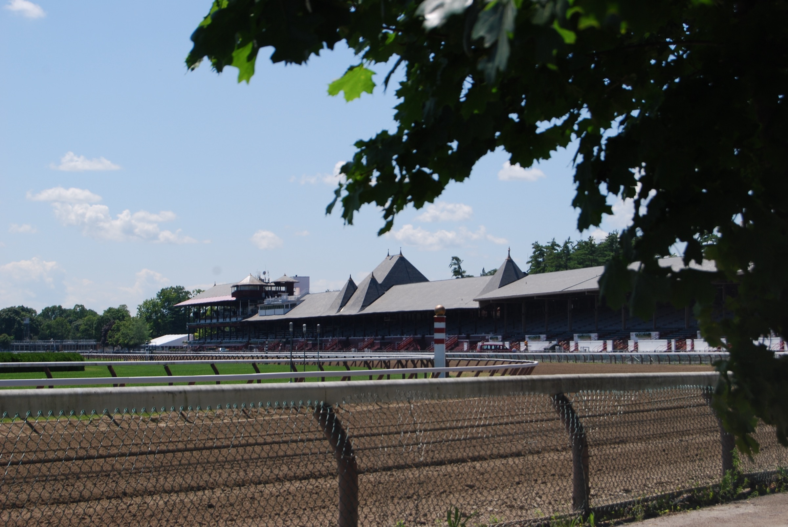

AV & Event Production Services in Saratoga Springs, NY
Event Production for Saratoga's Most Discerning Hosts
Saratoga Springs has a reputation that precedes it — a city where elegance is the baseline, not the exception. From the grandeur of the Saratoga Performing Arts Center to the refined charm of Congress Park and the storied ballrooms of its historic hotels, this is a place where events carry weight and details matter. Equinox Audio Visuals brings the kind of technical production that matches Saratoga's standard: meticulous, polished, and completely invisible until you notice how perfect everything sounds and looks.
We've produced events across Saratoga's diverse venue landscape — corporate retreats at the Gideon Putnam, fundraising galas at the Saratoga Springs City Center, wedding receptions in restored Victorian estates, and outdoor celebrations that take advantage of the region's natural beauty. Each venue has its own character and its own technical demands. A ballroom with 20-foot ceilings needs a different sound approach than a tented reception on a private estate. We know the difference, and we plan for it.
Saratoga's event calendar runs hot from May through October, with racing season, SPAC performances, and peak wedding season creating a concentrated demand for quality production. Our clients book us because we bring the same level of care to a 50-person rehearsal dinner as we do to a 500-person gala. Based in Manchester, Vermont — just over an hour away — we're close enough to do site visits, attend walkthroughs, and be on the ground whenever your event needs us.